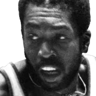

His teams won one title, with the 1972-73 New York Knicks. In his 221 games for 4 teams over 5 seasons they went 85–136 (38.5%), −51 games under .500, with an average final finish of 9.2.
Final NBA finish, season by season
Title Finals Other playoffs Missed the playoffs. #1 = champion; the dashed line is last place that season. Each point opens that season's final standings.
All 17 teams ranked in 1972-73, his best finish (#1)Teammate help
 Walt Frazier11.02 seasons
Walt Frazier11.02 seasons Oscar Robertson4.51 season
Oscar Robertson4.51 season Dave DeBusschere4.02 seasons
Dave DeBusschere4.02 seasons
Career
Regular seasons 1946-47 to 2026-27, games through Nov. 17, 2026. Records include 2026-27 to date; season counts and finishes use completed seasons. Each card opens its board. How we count.
Latest completed seasons
Season by season
Newest first; every header sorts. Final NBA finish is the team's rank among all teams that season (#1 = champion) and opens that season's standings. "Without him" uses the team-season window; the span line counts only the games between his first and last game for the team.
| 1973-74 | #17 of 17 | 25–57 30.5% | Missed the playoffs | 9 of 82 | 1–8 11.1% | 24–49 32.9%span: 3–3, gap −38.9 | −21.8 | |
| 1972-73 | #1 of 17 | 57–25 69.5% | Title 4–1 | 1 of 82 | 1–0 100.0% | 56–25 69.1%span: N/A, gap N/A | +30.9 | |
| 1971-72 | #15 of 17 | 23–59 28.0% | Missed the playoffs | 9 of 82 | 2–7 22.2% | 2–4 33.3%span: 2–4, gap −11.1 | −11.1 | |
| 1971-72 | #2 of 17 | 48–34 58.5% | Lost Finals 1–4 | 62 of 82 | 40–22 64.5% | 1–3 25.0%span: 1–3, gap +39.5 | +39.5 | |
| 1970-71 | #17 of 17 | 15–67 18.3% | Missed the playoffs | 74 of 82 | 14–60 18.9% | 1–7 12.5%span: 1–7, gap +6.4 | +6.4 | |
| 1969-70 | Cincinnati5th Eastern | #9 of 14 | 36–46 43.9% | Missed the playoffs | 66 of 82 | 27–39 40.9% | 9–7 56.2%span: 4–1, gap −39.1 | −15.3 |
Teammate help by season
Help = Teammates Score points for honors won that season by teammates who shared a game with him. How help works.
- 1973-74
 PhiladelphiaNo honored teammate
PhiladelphiaNo honored teammateMore: last season's honors
Help coming in (teammates' honors the season before): 0.2 · from Freddie Boyd (0.2)
- 1972-73
 New York
Walt Frazier All-NBA 2ndAll-StarAll-Def 1st1 gDave DeBusschere All-StarAll-Def 1st1 gBill Bradley All-Star1 g
New York
Walt Frazier All-NBA 2ndAll-StarAll-Def 1st1 gDave DeBusschere All-StarAll-Def 1st1 gBill Bradley All-Star1 g
More: last season's honors and other teammates
Help coming in (teammates' honors the season before): 8.0
Other teammates (no honors that season): Tom Riker 1 g, Dean Meminger 1 g, Jerry Lucas 1 g, Phil Jackson 1 g, John Gianelli 1 g, Henry Bibby 1 g, Dick Barnett 1 g, Earl Monroe 1 g
- 1971-72
 Cleveland
John Johnson All-Star9 gButch Beard All-Star1 g
Cleveland
John Johnson All-Star9 gButch Beard All-Star1 g
More: last season's honors and other teammates
Help coming in (teammates' honors the season before): 1.0
Other teammates (no honors that season): Walt Wesley 9 g, John Warren 9 g, Dave Sorenson 9 g, Bingo Smith 9 g, Steve Patterson 9 g, Charlie Davis 9 g, Bobby Washington 8 g, Greg Howard 8 g, Rick Roberson 5 g, Jackie Ridgle 4 g
- 1971-72New York
Walt Frazier All-NBA 1stAll-StarAll-Def 1st59 gDave DeBusschere All-StarAll-Def 1st60 g
More: last season's honors and other teammates
Help coming in (teammates' honors the season before): 9.0 · from Jerry Lucas (1.0), Earl Monroe (1.0)
Other teammates (no honors that season): Phil Jackson 62 g, Bill Bradley 59 g, Dick Barnett 59 g, Dean Meminger 58 g, Jerry Lucas 57 g, Earl Monroe 54 g, Eddie Miles 36 g, Eddie Mast 33 g, Charlie Paulk 27 g, Greg Fillmore 5 g, Mike Price 1 g
- 1970-71Cleveland
John Johnson All-Star59 g
More: last season's honors and other teammates
Help coming in (teammates' honors the season before): 0
Other teammates (no honors that season): Walt Wesley 74 g, John Warren 74 g, Dave Sorenson 71 g, Bobby Lewis 71 g, Bingo Smith 69 g, Joe Cooke 65 g, McCoy McLemore 50 g, Bobby Washington 47 g, Larry Mikan 47 g, Gary Suiter 21 g, Johnny Egan 18 g, Cliff Anderson 18 g, Gary Freeman 11 g, Len Chappell 6 g
- 1969-70Cincinnati
Oscar Robertson All-NBA 2ndAll-StarAll-Def 2nd54 gTom Van Arsdale All-Star56 g
More: last season's honors and other teammates
Help coming in (teammates' honors the season before): 6.5 · from Jerry Lucas (1.0)
Other teammates (no honors that season): Norm Van Lier 65 g, Fred Foster 63 g, Johnny Green 62 g, Connie Dierking 60 g, Bill Turner 58 g, Herm Gilliam 53 g, Wally Anderzunas 36 g, Adrian Smith 29 g, Jim King 19 g, Bob Cousy 7 g, Jerry Lucas 4 g
Compare with a peer
Suggested peers need 300+ career games. Pick anyone below.
Record against each opponent
Regular season, completed seasons: 221 games, 85–136, against 17 franchises. Grouped by franchise (named as today); game lists keep each team's name that season.
| Games list | |||||||
|---|---|---|---|---|---|---|---|
| 19 | 5–14 | 26.3% | −9 | N/A | 1969-70 to 1973-74 | ||
| 18 | 13–5 | 72.2% | +8 | N/A | 1970-71 to 1971-72 | ||
| 17 | 4–13 | 23.5% | −9 | N/A | 1969-70 to 1973-74 | ||
| 16 | 6–10 | 37.5% | −4 | 1–0 (2–1 in games) | 1969-70 to 1973-74 | ||
| 15 | 5–10 | 33.3% | −5 | N/A | 1970-71 to 1971-72 | ||
| 14 | 4–10 | 28.6% | −6 | N/A | 1969-70 to 1973-74 | ||
| 14 | 5–9 | 35.7% | −4 | N/A | 1969-70 to 1971-72 | ||
| 14 | 7–7 | 50.0% | 0 | N/A | 1969-70 to 1971-72 | ||
| 14 | 6–8 | 42.9% | −2 | 1–0 (3–1 in games) | 1969-70 to 1973-74 | ||
| 13 | 6–7 | 46.2% | −1 | N/A | 1969-70 to 1973-74 | ||
| 12 | 8–4 | 66.7% | +4 | N/A | 1969-70 to 1971-72 | ||
| 12 | 4–8 | 33.3% | −4 | N/A | 1969-70 to 1972-73 | ||
| 10 | 2–8 | 20.0% | −6 | 0–1 (1–3 in games) | 1969-70 to 1971-72 | ||
| 10 | 0–10 | 0.0% | −10 | N/A | 1969-70 to 1971-72 | ||
| 9 | 3–6 | 33.3% | −3 | N/A | 1969-70 to 1971-72 | ||
| 9 | 3–6 | 33.3% | −3 | N/A | 1970-71 to 1971-72 | ||
| 5 | 4–1 | 80.0% | +3 | N/A | 1971-72 |
Rows add up to his career record in his games. A playoff series counts when he played in it; early round-robin games show as games only. How we count.
Playoffs, with and without him
Arrival and departure
Team wins per 82 games the season before he arrived vs his first season there, and his last season vs the season after he left. Per 82 so short seasons compare fairly. These are team records, not a measure of what he did.
| Left | 1974-75 | 1973-74: 25–57 25.0 per 82 | 1974-75: 34–48 34.0 per 82 | +9.0 wins | |
| Arrived | 1973-74 | 1972-73: 9–73 9.0 per 82 | 1973-74: 25–57 25.0 per 82 | +16.0 wins | |
| Left | 1973-74 | 1972-73: 57–25 57.0 per 82 | 1973-74: 49–33 49.0 per 82 | −8.0 wins | |
| Left | 1972-73 | 1971-72: 23–59 23.0 per 82 | 1972-73: 32–50 32.0 per 82 | +9.0 wins | |
| Arrived | 1971-72 | 1970-71: 52–30 52.0 per 82 | 1971-72: 48–34 48.0 per 82 | −4.0 wins | |
| Left | Cincinnati | 1970-71 | 1969-70: 36–46 36.0 per 82 | 1970-71: 33–49 33.0 per 82 | −3.0 wins |
| Arrived | Cincinnati | 1969-70 | 1968-69: 41–41 41.0 per 82 | 1969-70: 36–46 36.0 per 82 | −5.0 wins |
Seasons split between teams
Each team's record before his first game for it, inside his window (games with and without him) and after his last game, in the seasons he played for two or more teams.
Best duos
Team record in regular-season games both played, top 10 by win %, at least 50 games together.

Earl Monroe 38–17 69.1%- Walt Frazier
40–20 66.7%
- Dave DeBusschere
40–21 65.6%
- Phil Jackson 41–22 65.1%
- Dick Barnett 39–21 65.0%
- Bill Bradley 39–21 65.0%
- Dean Meminger 38–21 64.4%
 Jerry Lucas
39–23 62.9%
Jerry Lucas
39–23 62.9%- Oscar Robertson
24–30 44.4%
- Johnny Green 26–36 41.9%